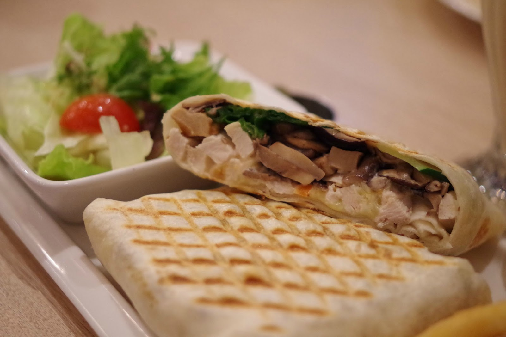
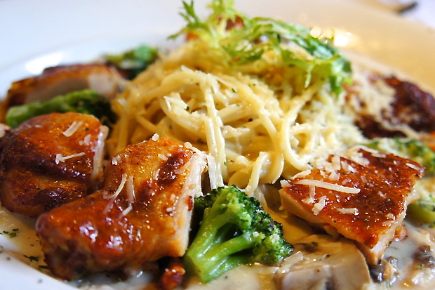
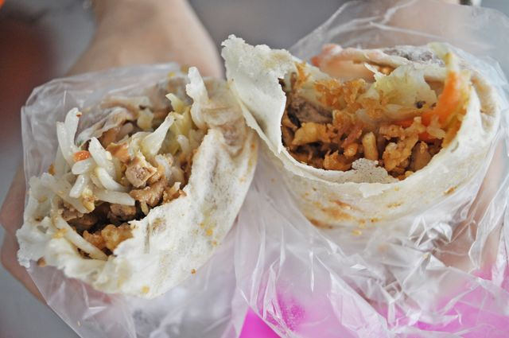
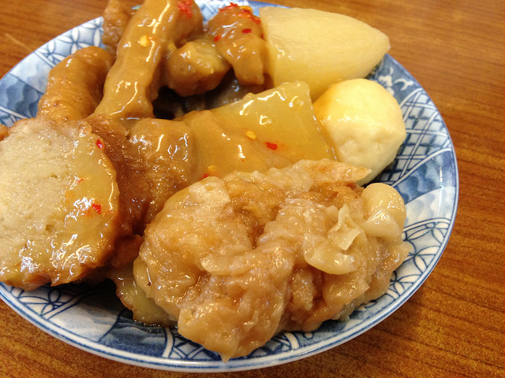
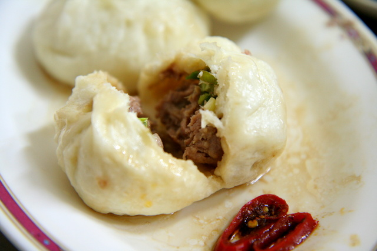
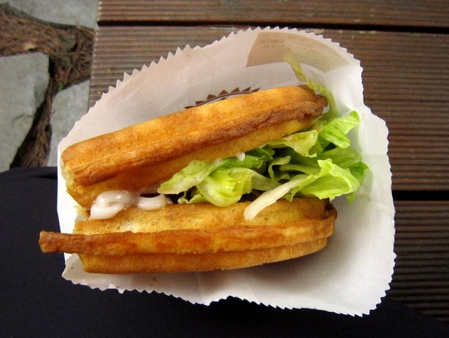

親朋好友聚會好所在
新橋b3
不同於台北或台中有很多集團式連鎖餐廳，新竹的集團連鎖餐廳並不多，其中最具有代表性的就是「新橋」了，新橋集團底下包括新橋燒肉、新橋食堂（創意和風料理）、新橋弄堂（上海料理）、隱酒藏（居酒屋）等特色主題餐廳，新橋b3算是比較新的一個分支。怪異的店名乍看之下不知道是什麼，其實是breakfast、brunch、bistro三個英文字母的縮寫。店內除了燈光好氣氛佳，是好姐妹聚會好所在之外，食物本身也不馬虎，主打的「磚餅」餅皮Q彈料多滋味絕佳，絕對不能錯過！
- 推薦理由：
- 輕食美味無負擔
- 裝潢簡潔明亮氣氛佳，適合聚會聊天
- 近大遠百續攤逛街方便
推薦指數：★★★★★
| 店家地址 | 300 新竹市北區勝利路195號 |
| 店家電話 | 03-527-7695 |
綠芳園
綠芳園咖啡庭園餐廳座落在新竹市的一隅，外表看似種滿綠色植物的一般住家，隱身在都市寧靜的小角落中，但走進去之後你會發現裡頭別有洞天！餐廳總共兩層樓，裝潢走的是英式田園鄉村風，舒適的環境和精緻的美食不論是家族聚會、朋友聚餐、尾牙餐敘、各式各樣的聚會都很適合。到了這裡一定要試試他們家的燉飯系列，口感溫潤，醬汁緊緊包覆著每粒米飯，米心略帶嚼勁，是十分道地的作法！
- 推薦理由：
- 餐點精緻高貴不貴
- 服務生男的帥女的美，服務品質一級棒
- 有附停車場，停車方便
推薦指數：★★★★
| 店家地址 | 300 新竹市景觀大道101號 |
| 店家電話 | 03-530-8666 |
在地人大推錯過會扼腕的小吃
城隍廟郭家潤餅
如果你剛好經過城隍廟，一定不難瞧見門口排得長長的人龍。沒錯，這些人都是在排元祖郭家潤餅的善男信女！小吃通常給人的印象總是重口味、油、不怎麼健康，不過郭家潤餅卻是好吃又健康的最佳選擇，潤餅裡面包了高麗菜、胡蘿蔔絲、豆芽菜、豆腐絲，還有增加酥脆口感的麵酥和提升香氣的花生粉，吃完後整個口齒留香、神清氣爽，考試都得一百分！總之來到新竹沒有吃到這家潤餅，別說你有來過新竹啊！！！
- 推薦理由：
- 小吃通常青菜很少但它青菜很多
- 健康的東西通常不太好吃，但這個健康又好吃
- 經營數十年沒漲過價，35塊就可以吃很開心
推薦指數：★★★★★
| 店家地址 | 300 新竹市北區中山路75號(城隍廟圓環旁入口處) |
| 店家電話 | 03-522-2285 |
雙星甜不辣
竹女的學生妹、拎著Prada的OL、剛從市場買完菜回來的大媽，這三者有什麼共通點？答案揭曉：他們都喜歡雙星甜不辣。已經開業將近三十年載的雙星甜不辣，是所有新竹人的共同回憶，小小一碗的甜不辣裡面有魚丸、大片的甜不辣、條狀的甜不辣、肉丸子、白蘿蔔、油豆腐、炸雞卷切片，滿足感整個突破天際啊！甜甜辣辣的獨門醬料是一定要加的，如果吃不飽的話還可以免費加湯喝到飽哦XD
- 推薦理由：
- 簡單樸實，新竹人從小吃到大的好滋味
- 可以無限加湯免費喝到飽
- 加一點辣更好吃啊啊啊～
推薦指數：★★★★
| 店家地址 | 300 新竹市東區大同路42號 |
| 店家電話 | 03-524-3863 |
藏身在巷弄中的隱藏版美食
金陵包子
有人說，營業時間很奇怪的店，多半都很厲害。如果這句話屬實，那麼我想金陵包子應該就是一家很厲害的店。他的營業時間從晚上11點開始，一路開到早上才打烊，因此舉凡晚上閒閒不睡覺的學生、夜班肚子餓的勞工朋友、帶著小弟出來見世面的大哥(???)，都很常出沒在這家包子店中。鮮肉包是金陵包子的招牌口味，皮薄肉香，剝開後香噴噴的肉汁瞬間四溢，搭配老闆特製的青辣椒醬油帶勁又夠味，你一定要試試！
- 推薦理由：
- 營業時間到清晨，熬夜準備考試、趕作業必備良伴
- 一顆才12塊，C/P值高
- 老闆特製青辣椒醬醬油一定要試試
推薦指數：★★★★★
| 店家地址 | 300 新竹市北區經國路二段496號 |
| 店家電話 | 03-528-5708 |
清交小木屋鬆餅
吃膩了學生餐廳，午餐時光想來點不一樣的選擇，小木屋鬆餅會是你的好朋友。滿滿的menu上寫滿了各種口味，有甜有鹹，十分多樣化。拿著鬆餅跟好朋友在校園裡找個涼亭一邊聊天一邊分食，真是在愜意不過了。什麼，你說小木屋鬆餅到處都有，沒什麼稀奇？但是當你認識裡面打工的同學時可就不一樣了啊，想加什麼料就加什麼料，價格不變，能不推嗎！
- 推薦理由：
- 各種口味一應俱全，跟好朋友一起分享也很棒
- 學生最愛的平價校園美食
- 如果認識店裡打工的同學的話可以請他幫你多加一些料
推薦指數：★★★★
| 店家地址 | 300 新竹市東區大學路1001號(交通大學光復校區，計算機與網路中心旁) |
| 店家電話 | 03-573-5754 ext:59078 |